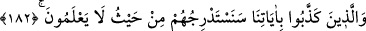

hizmetlerine sunsa belki bir bakıma faydalı olmuş olur. Fakat aslında o zulmetmiş ve
adaletten yüz çevirmiştir. Çünkü sahip olduğu şeylerin hiçbirini ehline teslim
etmemiştir. Zorla hastaya ilaç içiren, hacamat eden ve kan alan; câniyi öldürerek
cezalandıran kişi ise âdil olur. Çünkü yerine göre davranmıştır.
Kişinin adalet sıfatından dinen alacağı pay ise arzusuna uysun veya uymasın, Allah’ın
hiçbir tedbirine, hükmüne veya fiiline itiraz etmemektir. Çünkü Allah’ın her işi adalet
üzere, olması gerektiği gibi ve gereken şekildedir. Eğer Allah yaptığını o şekilde
yapmamış olsaydı, olandan daha büyük zararlar meydana gelirdi. Nitekim hasta hacamat
olmasa (kan aldırmasa), hacamat dolayısıyla uğrayacağı zarardan daha fazlasını görür.
Bu sebeple Allah Teâlâ, bütün fiillerinde âdildir.
İman ise, zahirî ve bâtınî inkar ve itirazları kesip atar. Zamânâ sövmemek, eşyayı
“felek”e nisbet etmemek ve adet haline geldiği üzere olana itiraz etmemek imânın tam
olmasından ileri gelir. Mü’min, bunların hepsinin Allah’ın emrine âmâde sebepler
olduğunu; bunlardan etkilenenler (müsebbebler) için en ince adalet ve lütuflarla en
güzel tertip ve yönlendirmelerle düzenlenip sevk edildiğini bilir. (İmam Gazzâli
(r.h.)’ın el-Maksadu’l-aksâ fî şerhi maânî esmâi’llahi’l-hüsnâ adlı eserinde böyle
geçmektedir.)
182. Âyetlerimizi yalanlayanları, hiç bilmeyecekleri yerden yavaş yavaş helâke
götüreceğiz.
“Ayetlerimizi yalanlayanları” Ayetlerin “ayetlerimiz” buyurularak azamet ifâde
edecek şekilde Allah’a ifzâfe edilmesi, şeref ve yüceliklerini artırmak, onları
yalanlamaya teşebbüsün ne büyük bir cür’et olduğunu ifade etmek içindir. Yani hak ve
hakikatin ölçüsü, doğruluk ve adaletin mihengi olan ayetlerimizi yalanlayanları “hiç
bilmeyecekleri yerden yavaş yavaş helâke yaklaştıracağız.”
“el-İstidrâc”, ya aşağıdan yukarıya derece derece nakletmek demek olan yükseltme
veya yukarıdan aşağıya doğru yavaş yavaş nakletmek demek olan indirmek mânâsınadır.
Burada ise en uygun mânâ, azab ve cezanın en son mertebesine ulaşması için helâk olma
derecelerinin en yükseğine nakletmek mânâsına olmasıdır.
Onları öyle olduğunu bilmedikleri yerden/taraftan helâke yavaş yavaş yaklaştıracağız.
Hatta onlar bunun Allah’dan kendilerine bir ikram ve O’na yaklaşmaya bir vesile
olduğunu sanacaklar. Veya bizim onlara ne yapmak istediğimizi bilmeyecekler. Çünkü
nimetler onlara peşpeşe gelecek. Onlar da bunun Allah’ın kendilerine bir lütfu olduğunu
sanıp azgınlık ve sapkınlıklarını artıracaklar. Neticede en korkunç azaba dûçar
olacaklar.